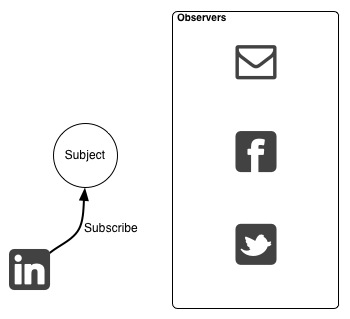
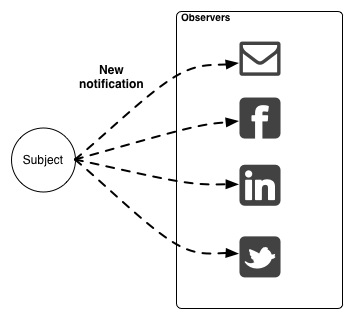
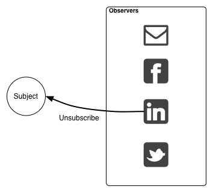
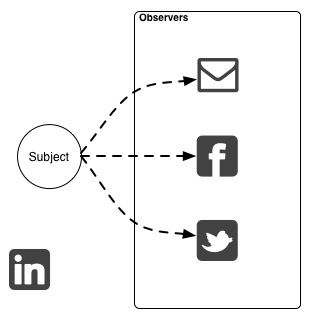
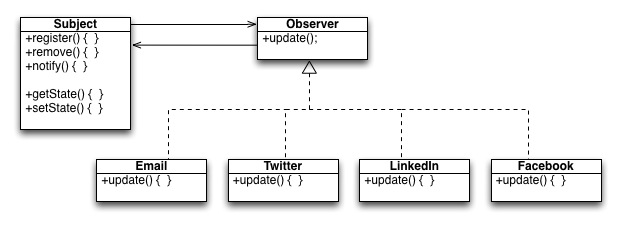
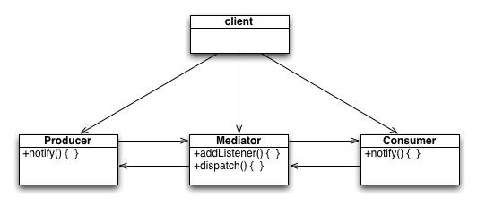
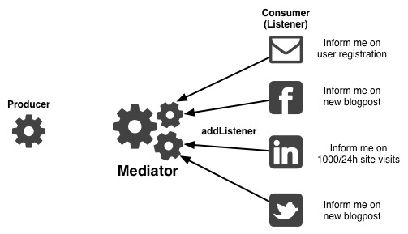
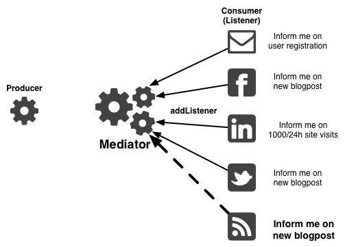
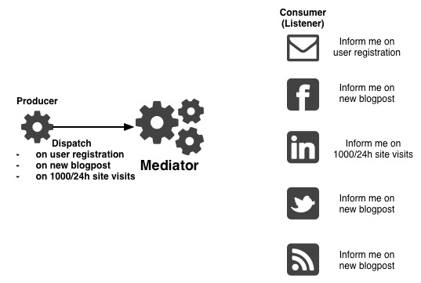
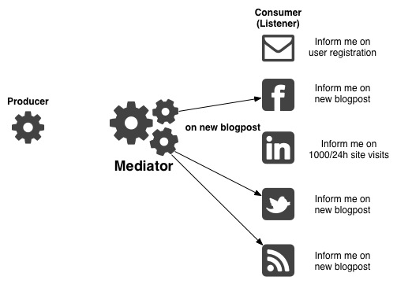

Introduction to Design Patterns
Created by Juan Manuel Torres / @onema / onema.io
Reviewing Object Oriented Programming
Who knows what OOP is?
Wikipedia: Object-oriented programming (OOP) is a programming ] that represents concepts as "objects" that have data fields (attributes that describe the object) and associated procedures known as methods.
Who knows the difference between a class and a object?


Class Structure
class ClassName
{
// These are variables bound to the object and can
// only be accessed by the object
public $classProperty01;
public function classMethod01()
{
// Methods are class specific function.
// Objects can reference themselves using $this.
}
}
Magic methods
Set of special methods that are called when certain actions occur with in objects.
Constructors and Destructors are examples
Inheritance
Classes can extend the behaviour of other classes by using the "extends" keyword
class FirstName
{
protected $firstName;
public function setFirstName($firstName)
{
$this->$name = $firstName;
}
}
class FullName extends FirstName
{
protected $lastName;
public function setLastName($lastName)
{
$this->$lastName = $lastName;
}
}
Overwriting properties and methods
class FirstName
{
protected $firstName;
public function setName($firstName)
{
$this->$name = $firstName;
}
}
class FullName extends FirstName
{
protected $lastName;
public function setName($firstName, $lastName)
{
$this->$name = $firstName;
$this->$lastName = $lastName;
}
}
Preserving method functionality while overwriting
class FirstName
{
protected $firstName;
public function setName($firstName)
{
$this->$name = $firstName;
}
}
class FullName extends FirstName
{
protected $lastName;
public function setName($firstName, $lastName)
{
parent::setName($firstName);
$this->$lastName = $lastName;
}
}
Public, protected and private properties
class Dog
{
private $sound
public function bark()
{
echo $sound;
}
}
$dog = new Dog();
$dog->bark();
$dog->sound; // we can't do this!
Polymorphism
Describes a pattern in which classes have different behaviour but share common interface.
Imagine we are the creators of a notification solution
Our particular implementation sends an email notification to us every time an important event happens on our website: new article, blogpost, registration, etc.
With the advent of so many different social media sites
We have been pressured to re-design our implementation and send the notifications to multiple social media channels: Facebook, Twitter, LinkedIn, in addition to email.
Meet the Observer and Mediator Patterns
Extending behavior without inheritance
Observer Pattern
Define a one-to-many dependency between objects so that when one object changes state, all its dependents are notified and updated automatically.
Think about it as a magazine subscription service.
Subscribe to a magazine
Every time there is a new edition it gets delivered to you
When you don't want to receive the magazine you unsubscribe
Only subscribers will continue to get the magazine
Exercise 1
Based on what we know about the observer pattern:- Design the class structure and
- Explain how observers get registered
- Explain how observers get notified
Class Structure
Mediator Pattern
Define an object that encapsulates how a set of objects interact. Mediator promotes loose coupling by keeping objects from referring to each other explicitly, and it lets you vary their interaction independently.
Loose coupling is achieved by communicating with a mediator instead of each other
We need to extend our observer system to allow different types of classes to be used
Sending notifications is not enough, when important events happen we want to be able to perform other actions. Objects performing these actions should not know about observed objects (loose coupling). For example after a new blogpost is created an RSS feed is generated or a PDF version of the post is placed in a remote location for downloads.
Consumer wants to be informed (listen) on certain events
New (non-notification) RSS consumer may also listen for "on new blogpost" event
When an event occurs the producer informs the mediator
Finally the mediator notifies the consumers in order of priority
The Symfony Event Dispatcher Component
Implements the Mediator pattern, enabling developers to extend the symfony framework, or use the component in their own projects.
Exercise 2
Use pseudocode to implement the process described below, no need to implement the mediator, assume the mediator class has the following methods: addListener(eventName, event) and dispatch(eventName)
- Consumer wants to be informed (listen) on certain events
- When a blogpost is created the producer informs the mediator
- The mediator notifies the consumers in order of priority
Code
use Symfony\Component\EventDispatcher\EventDispatcher;
use Symfony\Component\EventDispatcher\Event;
$dispatcher = new EventDispatcher();
// add listeners
$dispatcher->addListener('blog.post.new', array($rssFeed, 'onNewPost'));
$dispatcher->addListener('blog.post.new', array($sendTweet, 'onNewPost'));
$blogPost = new BlogPost(...);
$blogPost->setName('Hello World!');
$blogPost->save();
// dispatch the event
$event = new BlogPostEvent($blogPost);
$dispatcher->dispatch('blog.post.saved', $event);